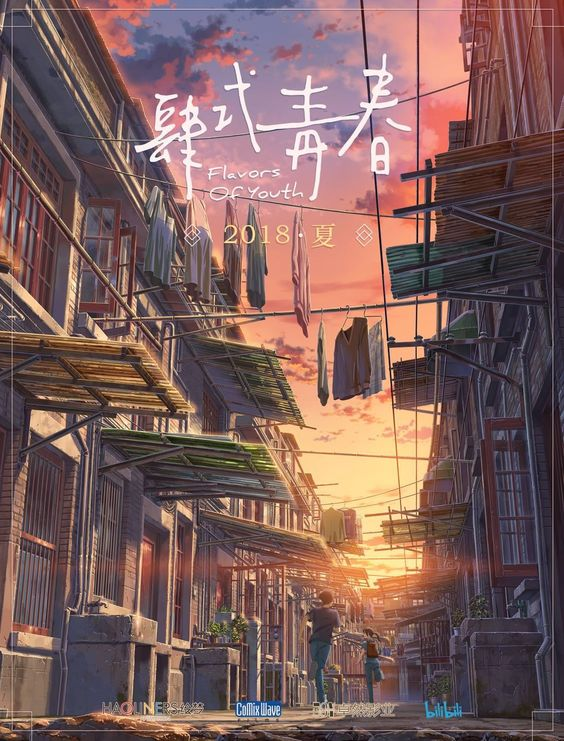

AKIHABARA
LAS PELICULAS DE ANIME QUE NO PUEDES DEJAR PASAR
En este apartado encontraras peliculas un tanto agridulces, pero las historias te atraparan en su magnifico arte de diseño de los personajes y ambiente, para llevarnos a través de magnificas historias, tanto de amor correspondido como de alguna que otra historia de fantasía. |
 |
 Inicio Peliculas clásicas |
 Para llorar un rato |
 Nostalgia |
Próximos estrenos |
El jardín de las palabrasLa historia tiene lugar en la temporada de lluvia de Japón durante el mes de junio. Un aprendiz de zapatero llamado Takao se encuentra dibujando zapatos en un jardín japonés cuando conoce a una misteriosa mujer mayor que él. Desde ese primer encuentro, ambos siguen reuniéndose y estrechando su relación. | |
Your nameTaki y Mitsuha descubren un día que durante el sueño sus cuerpos se intercambian, y comienzan a comunicarse por medio de notas. A medida que consiguen superar torpemente un reto tras otro, se va creando entre los dos un vínculo que poco a poco se convierte en algo más romántico. | |
DoukyuuseiSajo y Kusakabe son más o menos igual de altos, tienen la misma edad y van a la misma clase. Por lo demás, no puede decirse que tengan mucho en común. Kusakabe, de carácter inquieto y despreocupado, toca en un grupo de rock con sus amigos y deja pasar los días sin pensar mucho en el futuro. Sajo, en cambio, es un alumno modélico que no termina de encajar en ese instituto de macarras, al que nadie sabe muy bien cómo fue a parar. Un día, Kusakabe se da cuenta de que su compañero no canta en los ensayos del coro para intentar disimular su falta de oído musical, así que se ofrece a darle unas lecciones. Entre refrescos compartidos bajo el sol de verano, nace entre ellos un amor de adolescencia que crecerá con el devenir de las estaciones. De la mano, compartiendo sinsabores y alegrías, ambos se encaminarán hacia el final de sus días de instituto y el comienzo de la vida adulta. | |
Shiki Oriori: Sabores de la juventudRecuerdos en un bol de fideos calientes. Una belleza, el paso del tiempo y un rayo de luz en el camino. Un primer amor agridulce. Tres relatos en tres ciudades chinas.La película está dividida en tres segmentos: Hidamari no Choshoku, Chiisana Espectáculo de Moda, Shanghai Koi. Cada una ambientada en una ciudad diferente de China: Beijing, Guangzhou y Shanghái. Cada parte explora diferentes temas sobre el amor y las alegrías sencillas de la vida. |  |
Puedo escuchar el marUna chica de Tokio acaba de ser trasladada a una de las escuelas superiores de la ciudad de Kochi. Es guapa, buena en los deportes y en los estudios, pero de algún modo no consigue adaptarse a la vida social de la escuela. A ese mismo colegio pertenecen Taku Morisaki y Yukata Matsuno, dos grandes amigos, el primero de los cuales empieza a interesarse visiblemente por la recién llegada Muto. |  |
Viaje a AgarthaAsuna emprende un viaje hasta Agartha para encontrar a su padre y a un joven misterioso que le salvó la vida. La aventura está plagada de peligros, ya que existen unas reglas que mantienen el equilibrio entre los mundos. |
Inicio Peliculas clásicas |
Para llorar un rato |
Nostalgia |
Próximos estrenos |